基于 MoerEngine 渲染引擛的
体积雾设计、优化与论文适配
MoerEngine · 暑期课题研究报告
从 Froxel MVP 到自适应稀疏体辐射缓存 (VRC)
myrt1e
2026年8月
#ifdef __cplusplus 双语言守卫RasterRenderer::Render() 按序调用各 Pass以 UE 体积雾为参考蓝本，在 MoerEngine 上分四步递进实现，每步利用 Moer 独有特性进行适配：
| 步骤 | 内容 | 与 Moer 的相性 | 关键产出 |
|---|---|---|---|
| Step 1 | 对齐 UE 的基础 Froxel + 时域重投影方案，建立可用体积雾 MVP | 利用 Moer 的 Pass 生命周期 + 共享参数头 | Froxel 网格、Beer-Lambert 积分、时域重投影 |
| Step 2 | 利用 Moer 独有的动态 Ray Query Probe GI，注入可随场景更新的间接光 | Moer 独有，UE 需烘焙 | 工作组共享查询、四面体旋转 |
| Step 3 | 选择适配 Moer 的采样论文 (FAST) 进行工程化适配 | 与 Froxel Jitter 完全对应 | FAST 噪声纹理、Shader 采样 |
| Step 4 | 在自适应稀疏 Probe 层级上构建独立的介质辐射缓存 (VRC) | 复用 Moer 稀疏 Probe 基础设施 | 独立 L1 方向辐射、介质感知调度 |
通过配置结构体、UI 控件、共享参数头、Pass 类和 Shader 文件即可实现目标渲染效果 —— 这正是 MoerEngine 的设计理念。
采用与相机视锥对齐的 Froxel 三维网格。在 1920×1080 分辨率下，XY 方向每 12×12 像素一个 Froxel，Z 方向 64 个指数分布切片。
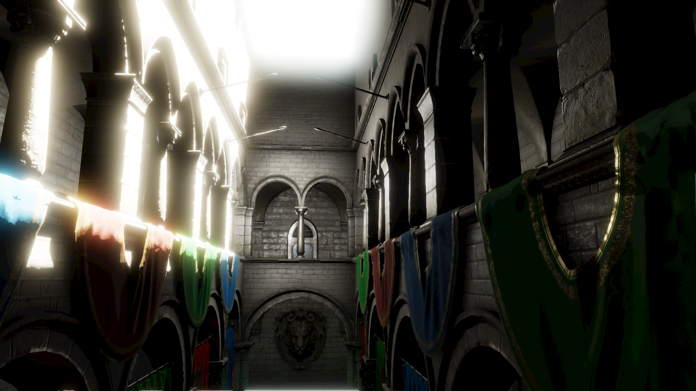
Froxel 的 Z 切片采用指数分布，在引擛 Reverse-Z 约定下重建世界坐标。对于 Froxel (i, j, k)：
r̂ 为从相机到该 Froxel 远平面交点的归一化方向向量。
密度随高度指数衰减：
同时支持局部球形雾团，径向平滑过渡：
积分在像素场深度处停止；合成阶段用深度引权重上采样。
历史纹理理应代表稳定、未抖动 Froxel 单元上的时间平均，不应随 Jitter 整体平移。
→ Jitter 只影响密度采样位，光照和阴影查询固定到未抖动中心。CSM 稳定性和 Probe GI 查询均不受 Jitter 干扰。
最初使用最近 Froxel 采样，随后改为 XY 双线性 + 指数 Z 线性插值。但 XY 双线性只考虑屏幕距离，未比较四个 Froxel 代表像素的场景深度 → 前景/背深度断层处会把背景雾团混入物体轮廓（"Halo"）
同深度层保持双线性，深度差异时指数衰减；四邻域均失配（极薄轮建）时回退到最近 Froxel。
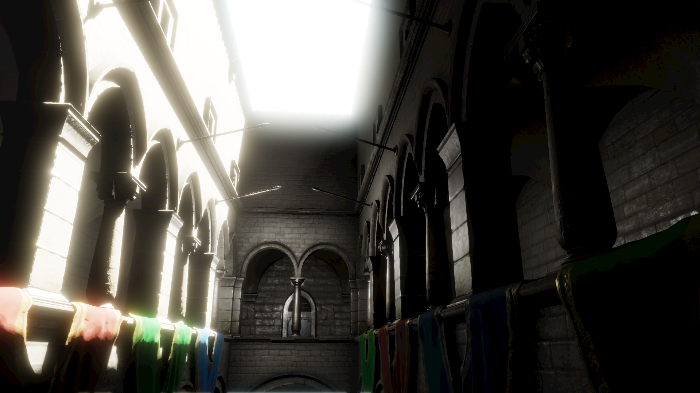
将 Probe GI 接入体积雾 → 实现可随场景动态变化的间接雾光
逐 Froxel 查询 Probe GI 的开销不可接受。利用 Compute Shader 工作组共享内存：
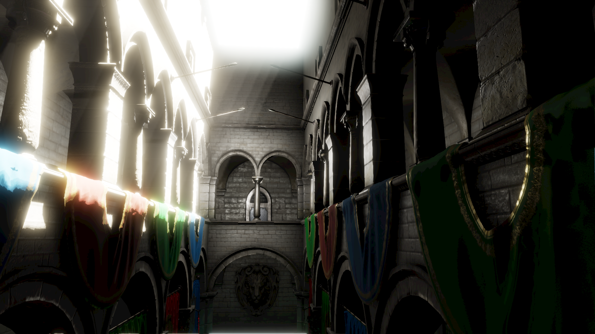
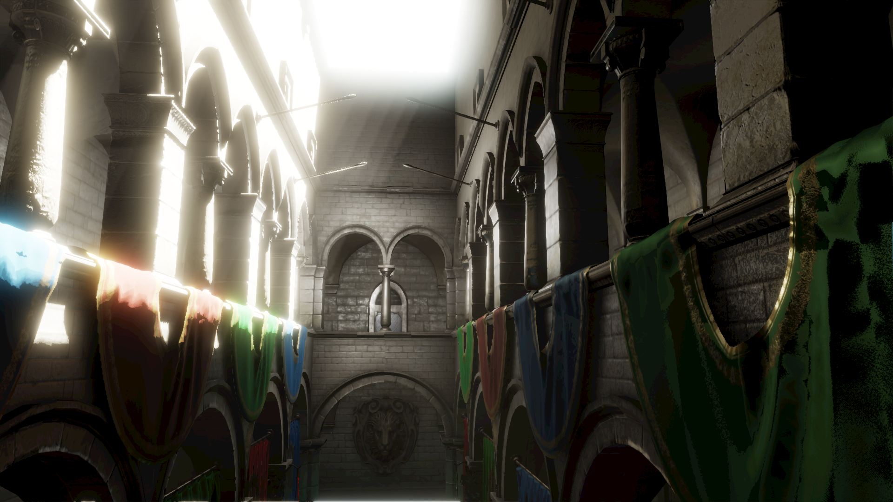
| 候选方案 | 相性 | 研究价值 | 可实现性 | 结论 |
|---|---|---|---|---|
| FAST Froxel Jitter | 5 | 5 | 4 | 本轮实施 |
| STBN Froxel Jitter | 3 | 5 | 3 | A/B 基线 |
| 局部灯 ReSTIR | 3 | 4 | 4 | 后续研究 |
| 神经多次散射 | 2 | 5 | 2 | 需 TensorRT |
采样器的偏差不应只看单帧频谱，还应与实际的时间滤波器匹配。FAST 根据引擛使用的 0.94 历史权重、7-tap 非线性 Clamp 和动态历史拒绝参数，生成更优的时空样本。
| Halton | FAST | |
|---|---|---|
| 空间分布 | 所有 Froxel 共用同一偏移 | 每个 Froxel 独立偏移 |
| 空间相关性 | 高（全屏同步抖动） | 低（偏差均匀分布） |
| 纹理来源 | CPU 计算序列 | GPU 纹理查表 64×64×32 |
| 显存 | 0 | 0.5 MiB (RGBA8) |
120帧 warmup 后充分收敛。静态画面差异 不可感知。
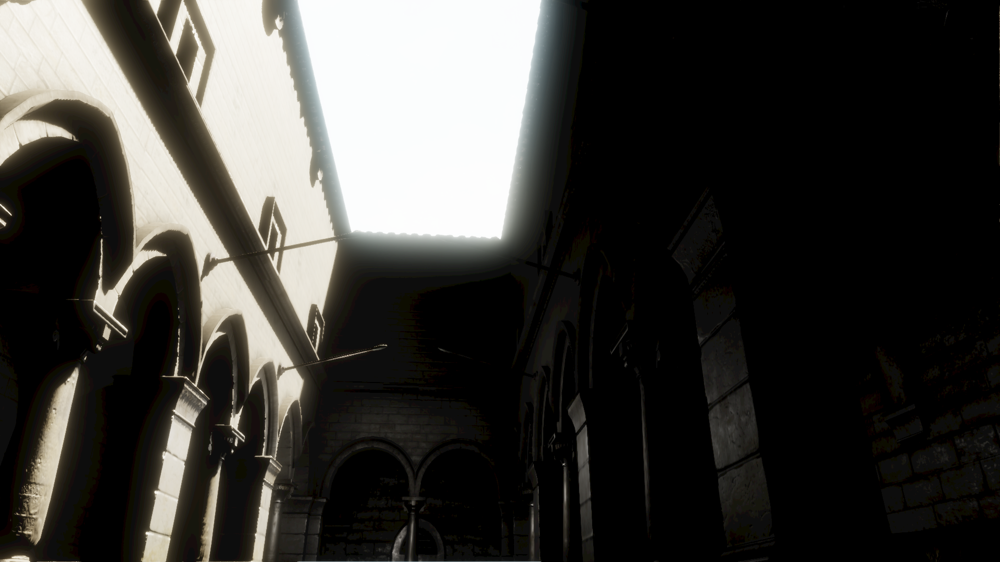
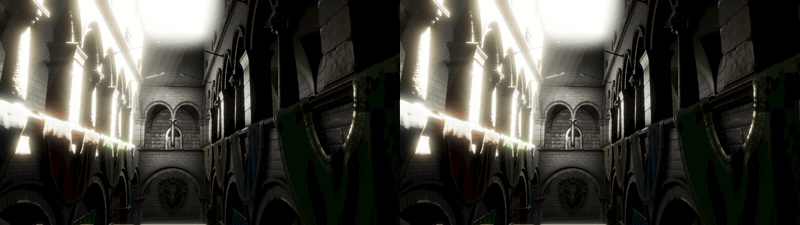
| 帧 | YAVG | YMAX | 差异 |
|---|---|---|---|
| 0 | 0.008 | 2 | 20× |
| 45 | 0.022 | 4 | 4× |
| 89 | 0.004 | 1 | 14× |
YAVG = 平均亮度差/255，均低于人眼可感知阈值
3.3× 密度 + 高各向异性相函数。采样位偏移对密度值的影响放大。
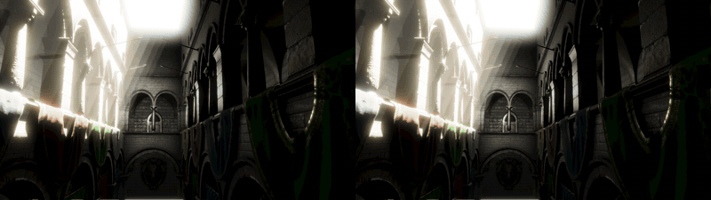
| 帧 | 默认 YAVG | 高对比 YAVG | 倍数 |
|---|---|---|---|
| 0 | 0.008 | 0.160 | 20× |
| 10 | 0.008 | 0.147 | 18× |
| 30 | 0.008 | 0.140 | 18× |
| 45 | 0.022 | 0.092 | 4× |
| 89 | 0.004 | 0.053 | 14× |
| 帧 | 收敛 YAVG | 未收敛 YAVG | YMAX |
|---|---|---|---|
| 10 | 0.147 | 0.018 | 4 |
| 30 | 0.140 | 0.111 | 9 |
| 45 | 0.092 | 0.200 | 12 |
| 75 | 0.049 | 0.278 | 7 |
未收敛场景差异是收敛场景的 25×，已进入人眼可感知范围
从三组实验各选取差异最大的一帧，展示 Halton vs FAST XY 的像素级差异（右图为 30x 放大差异图）：
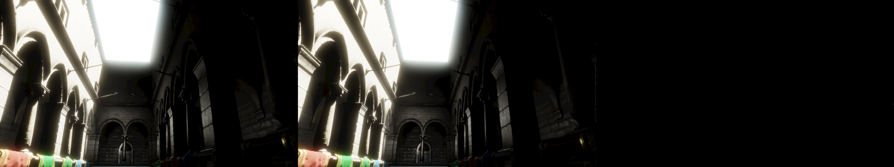
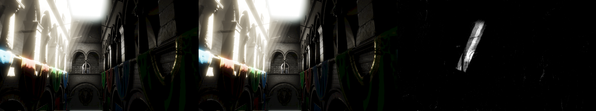
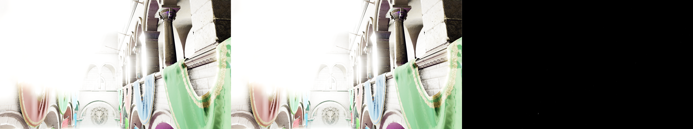
每行从左到右：Halton | FAST XY | 30x 放大差异图（白色=差异区域）
实验3（未收敛）frame 017 的 YMAX=93/255，差异集中在雾密度突变区域。这正是 FAST 价值所在：相机切换后重建期内，Halton 全屏同步闪烁而 FAST 偏差均匀分布。
Moer 已有完整 Cell→Brick→PageTable→Streaming→DirtyTracking 基础设施 → 复用这套稀疏 Probe 层级，存储独立的参与介质辐尽数据
VRC 不是把表面 Probe GI 直接乘进雾！
用表面 DDGI 作为低频边界光源，再执行介质消光、光源可见性和历史多次散射反馈。
| 参数 | 默认值 | 作用 |
|---|---|---|
| Density Threshold | 0.0010 | Cell 是否需体积缓存 |
| Gradient Threshold | 0.18 | 密度变化大时细化 |
| Screen Weight | 1.0 | 屏幕贡献权重 |
| Priority Weight | 2.0 | 介质优先级权重 |
| History Weight | 0.88 | 双缓冲历史混合 |
| Multi Scatter | 0.12 | 受控近假高阶散射 |
| Transmittance Steps | 6 | 介质光行深度积分步数 |
高密度/高梯度/高屏幕贡献区域优先细化；更新调度在 mandatory/dirty 优先级之后加入介质优先级和更新年龄，受每帧 2 Brick 预算约束。
每个物理 Probe 保存 L0（各向同性）和 L1-X/Y/Z（一阶方向性）：
V_RayQuery 为硬件 Ray Query 对不透明几何执行的可见性测试；T_medium 为沿光线 2–4 步 Beer-Lambert 透射率积分。
从上一帧缓存采样 6 个邻域，按透射率衰减提供受控的近似多次散射反馈。
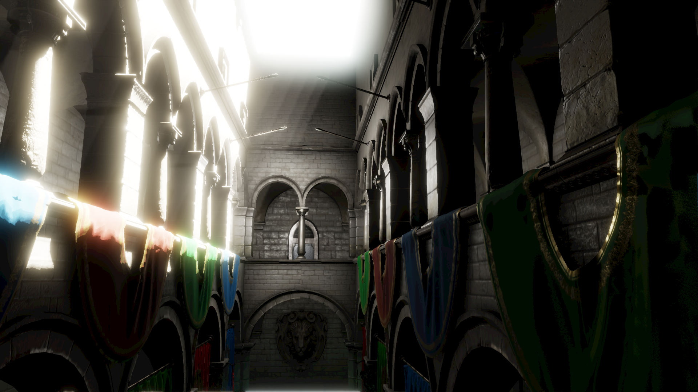
| 项目 | 值 |
|---|---|
| GPU | RTX 4060 Laptop (8188 MiB) |
| CPU | i7-13700H (14C/20T) |
| 内存 | 32 GiB |
| RHI | Vulkan 1.3 |
| 构建 | Debug, Clang 22.1.8 |
| 分辨率 | 1920×1080 |
| 场景 | Sponza (Camera.001) |
| Froxel | 320×180×64 = 3.69M |
引擛内置 GPU Timestamp Scope 每秒采样；Benchmark 以固定步长 1/60s 运行，120帧 warmup 后进入 90帧轨迹，取稳定值。
| 配置 | GraphicsExec | FogTotal | Probe GI |
|---|---|---|---|
| Fog Off (基线) | ~11.2 ms | — | — |
| 历史报告 (160×90×64) | 14.6 ms | 0.561 ms | 关闭 |
| 本次实测 (320×180×64) | 17.173 ms | 6.508 ms | 开启 |
Froxel 网格 4× 体素 + Probe GI 从关闭变开启 → FogTotal 增大主要来自 Probe GI 注入开销。
| 阶段 | 均值 (ms) | StdDev | 占比 |
|---|---|---|---|
| CSM 阴影采样 | 0.143 | 0.004 | 2.2% |
| 阴影时域滤波 | 0.104 | 0.014 | 1.6% |
| 光照/CSM/ProbeGI 注入 | 5.760 | 0.193 | 88.5% |
| 介质时域重投影 | 0.232 | 0.000 | 3.6% |
| Beer-Lambert 积分 | 0.049 | 0.001 | 0.8% |
| 调试可视化 | 0.015 | 0.000 | 0.2% |
| 深度感知合成 | 0.203 | 0.021 | 3.1% |
| VRC 稀疏更新 | 0.066 | 0.001 | 1.0% |
| 合计 | 6.508 | 0.183 | 100% |
0.196 ms → 5.760 ms（关闭 vs 开启），占 FogTotal 88.5%。每个 4×4×4 工作组做完整 8 角点 Probe 查询 + Ray Query 可见性测试。
0.066 ms (1.0%) + 0.3125 MiB 显存。两次独立测量 (0.064 vs 0.066 ms) 证明不随 Froxel 分辨率变化。受每帧 2 Brick 预算约束。
CSM 0.143 + 时域 0.232 + 合成 0.203 ≈ 0.75 ms（4× Froxel 体素），与历史报告 0.561 ms（2× 粗网格）量级一致。
体积雾占 6.5 ms (37.8%)，仅次于几何渲染的第二大开销。Probe GI 优化是提升帧率最有效路径。